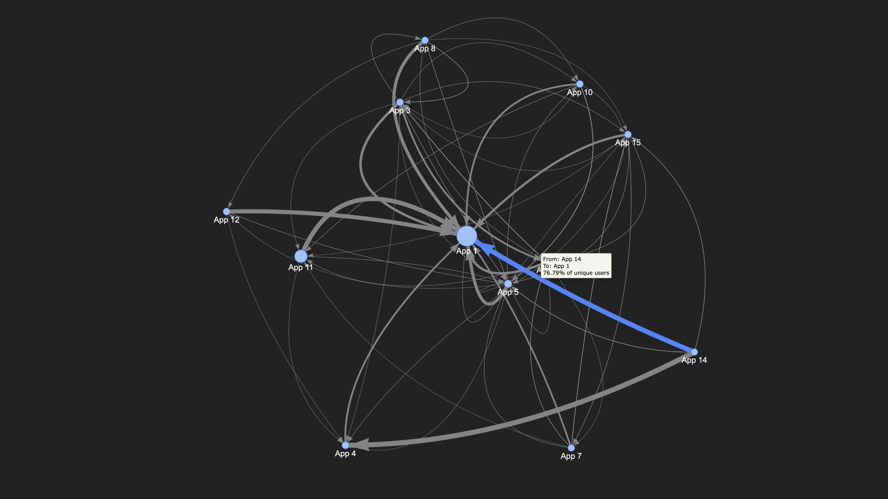

Projects

COVID-19 Risk Analysis in Metallurgical Plants
Developing a data-driven dashboard to assist the medical team in identifying high-risk sites.

Customer Shopping Behavior with Apriori Analysis
Analyzing customer purchase patterns using the Apriori algorithm to identify frequent store pairs.

Geospatial Data Science for Customer Engagement
Using location data to determine user behavior and engagement for shopping mall visits and promotional campaigns.

Predictive Maintenance of Mining Trains
Developing predictive maintenance models to reduce mining train failures on-track.

Creating Customer Personas of Loyalty Programs
Visualizing customer journeys in a loyalty program with personas.

Recommendation Engine for Retail Coupons
Boosting app engagement and sales with a personalized coupon recommendation engine.

Sentiment Analysis of Online Reviews
Using NLP to analyze user feedback and sentiment on reviews scrapped from the web.

Graph
Graph.